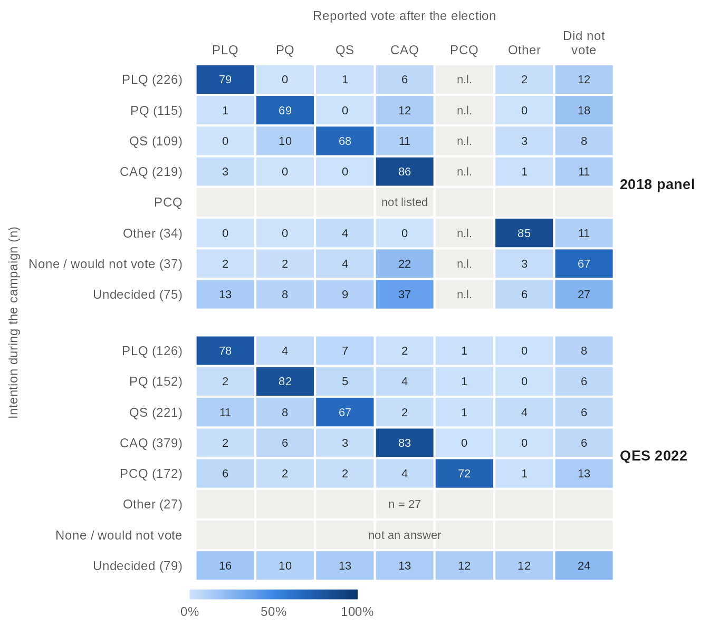
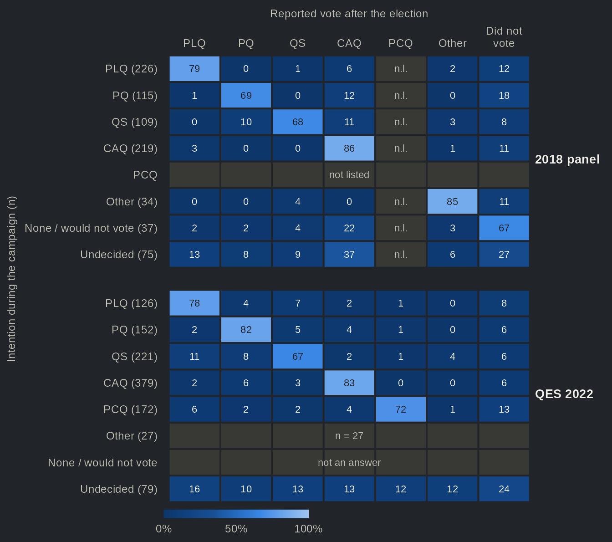
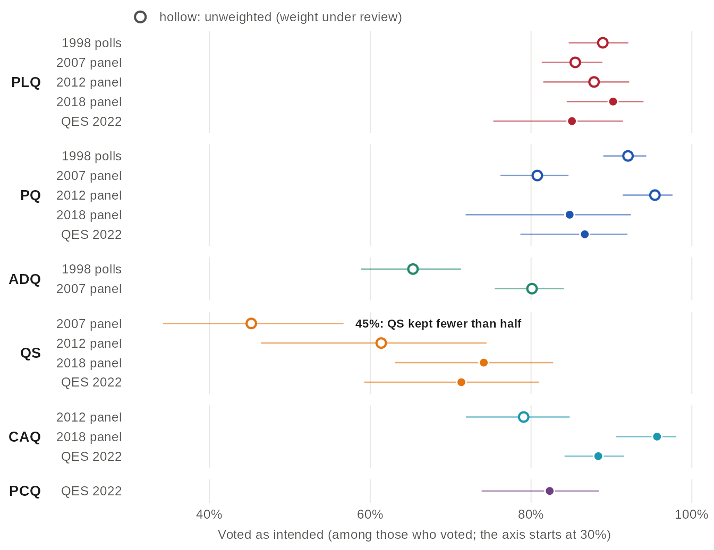
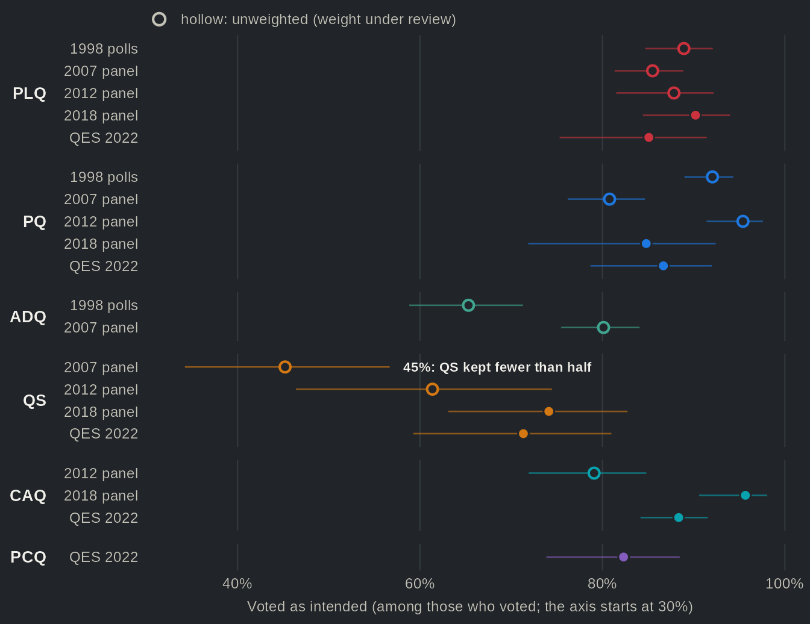
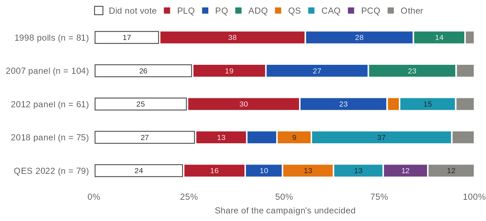
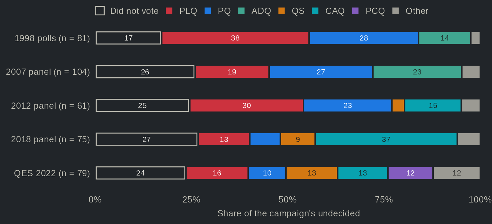

Changing minds during the campaign: panel transitions
Source:vignettes/articles/transitions.Rmd
transitions.RmdCross-sections tell us how the vote ended up; panels tell us who moved. The 2018 Durand panel and the 2022 Quebec Election Study interviewed the same people during the campaign and after the vote. Most voters did what they said: 88% of those who intended to vote CAQ in 2022, and voted, reported a CAQ vote. Québec solidaire kept fewer, 71%. In 2018 the undecided broke toward the winner: 37% [25, 51] of the panel’s 75 undecided voted CAQ, and 27% did not vote.
The data
The pooled vote_choice in the long layout keeps one row
per respondent and wave: the intention (with the push of the undecided,
type intention_push) before the election and the reported
vote (recall) after it.
h <- qes_harmonize(
studies = c("qes1998", "qes2007_panel", "qes2012_panel", "qes2018_panel", "qes2022"),
targets = "vote_choice",
layout = "long", missing = "reasons", quiet = TRUE
)
with(h[h$study == "qes2022", ], table(wave, vote_choice__type))
#> vote_choice__type
#> wave recall intention_push intention
#> cps 0 1521 0
#> pes 1220 0 0Respondents are matched on qes_id within a study, and
each transition is weighted with the post-election weight of the
respondent.
Where each group of intenders ended up


Source: qesR, pooled vote_choice in the long layout, respondents interviewed in both waves of the 2018 Durand panel and of the QES 2022 (campaign and post-election waves), weighted with the post-election weight. Rows: the intention with the undecided pushed (intention_push), with the number of respondents; undecided: still no party after the push. The two blocks have the same rows and columns; grey cells have no value: the 2018 panel did not list the PCQ (n.l.), the 2022 campaign question has no 'none / would not vote' answer, and rows of fewer than 30 respondents are not drawn. The 95% confidence intervals and the panels of 1998, 2007 and 2012 (unweighted) are in the table view.
Table view
| Election | Study | Intention | Reported vote | Row %, [95% CI] | n (row) | Weighting |
|---|---|---|---|---|---|---|
| 1998 | 1998 polls | PLQ | PLQ | 80.1 [75.3, 84.1] | 311 | unweighted (weight under review) |
| 1998 | 1998 polls | PLQ | PQ | 5.1 [3.2, 8.2] | 311 | unweighted (weight under review) |
| 1998 | 1998 polls | PLQ | ADQ | 4.5 [2.7, 7.5] | 311 | unweighted (weight under review) |
| 1998 | 1998 polls | PLQ | QS | — | 311 | unweighted (weight under review) |
| 1998 | 1998 polls | PLQ | CAQ | — | 311 | unweighted (weight under review) |
| 1998 | 1998 polls | PLQ | PCQ | — | 311 | unweighted (weight under review) |
| 1998 | 1998 polls | PLQ | Other | 0.3 [0.0, 2.2] | 311 | unweighted (weight under review) |
| 1998 | 1998 polls | PLQ | Did not vote | 10.0 [7.1, 13.8] | 311 | unweighted (weight under review) |
| 1998 | 1998 polls | PQ | PLQ | 3.9 [2.5, 6.2] | 433 | unweighted (weight under review) |
| 1998 | 1998 polls | PQ | PQ | 85.7 [82.1, 88.7] | 433 | unweighted (weight under review) |
| 1998 | 1998 polls | PQ | ADQ | 2.5 [1.4, 4.5] | 433 | unweighted (weight under review) |
| 1998 | 1998 polls | PQ | QS | — | 433 | unweighted (weight under review) |
| 1998 | 1998 polls | PQ | CAQ | — | 433 | unweighted (weight under review) |
| 1998 | 1998 polls | PQ | PCQ | — | 433 | unweighted (weight under review) |
| 1998 | 1998 polls | PQ | Other | 0.9 [0.3, 2.4] | 433 | unweighted (weight under review) |
| 1998 | 1998 polls | PQ | Did not vote | 6.9 [4.9, 9.7] | 433 | unweighted (weight under review) |
| 1998 | 1998 polls | ADQ | PLQ | 13.1 [9.5, 17.8] | 259 | unweighted (weight under review) |
| 1998 | 1998 polls | ADQ | PQ | 15.4 [11.5, 20.4] | 259 | unweighted (weight under review) |
| 1998 | 1998 polls | ADQ | ADQ | 56.0 [49.9, 61.9] | 259 | unweighted (weight under review) |
| 1998 | 1998 polls | ADQ | QS | — | 259 | unweighted (weight under review) |
| 1998 | 1998 polls | ADQ | CAQ | — | 259 | unweighted (weight under review) |
| 1998 | 1998 polls | ADQ | PCQ | — | 259 | unweighted (weight under review) |
| 1998 | 1998 polls | ADQ | Other | 1.2 [0.4, 3.5] | 259 | unweighted (weight under review) |
| 1998 | 1998 polls | ADQ | Did not vote | 14.3 [10.5, 19.1] | 259 | unweighted (weight under review) |
| 1998 | 1998 polls | Other | PLQ | n < 30 | 26 | unweighted (weight under review) |
| 1998 | 1998 polls | Other | PQ | n < 30 | 26 | unweighted (weight under review) |
| 1998 | 1998 polls | Other | ADQ | n < 30 | 26 | unweighted (weight under review) |
| 1998 | 1998 polls | Other | QS | — | 26 | unweighted (weight under review) |
| 1998 | 1998 polls | Other | CAQ | — | 26 | unweighted (weight under review) |
| 1998 | 1998 polls | Other | PCQ | — | 26 | unweighted (weight under review) |
| 1998 | 1998 polls | Other | Other | n < 30 | 26 | unweighted (weight under review) |
| 1998 | 1998 polls | Other | Did not vote | n < 30 | 26 | unweighted (weight under review) |
| 1998 | 1998 polls | None / would not vote | PLQ | n < 30 | 22 | unweighted (weight under review) |
| 1998 | 1998 polls | None / would not vote | PQ | n < 30 | 22 | unweighted (weight under review) |
| 1998 | 1998 polls | None / would not vote | ADQ | n < 30 | 22 | unweighted (weight under review) |
| 1998 | 1998 polls | None / would not vote | QS | — | 22 | unweighted (weight under review) |
| 1998 | 1998 polls | None / would not vote | CAQ | — | 22 | unweighted (weight under review) |
| 1998 | 1998 polls | None / would not vote | PCQ | — | 22 | unweighted (weight under review) |
| 1998 | 1998 polls | None / would not vote | Other | n < 30 | 22 | unweighted (weight under review) |
| 1998 | 1998 polls | None / would not vote | Did not vote | n < 30 | 22 | unweighted (weight under review) |
| 1998 | 1998 polls | Undecided | PLQ | 38.3 [28.4, 49.3] | 81 | unweighted (weight under review) |
| 1998 | 1998 polls | Undecided | PQ | 28.4 [19.7, 39.1] | 81 | unweighted (weight under review) |
| 1998 | 1998 polls | Undecided | ADQ | 13.6 [7.7, 22.9] | 81 | unweighted (weight under review) |
| 1998 | 1998 polls | Undecided | QS | — | 81 | unweighted (weight under review) |
| 1998 | 1998 polls | Undecided | CAQ | — | 81 | unweighted (weight under review) |
| 1998 | 1998 polls | Undecided | PCQ | — | 81 | unweighted (weight under review) |
| 1998 | 1998 polls | Undecided | Other | 2.5 [0.6, 9.3] | 81 | unweighted (weight under review) |
| 1998 | 1998 polls | Undecided | Did not vote | 17.3 [10.5, 27.1] | 81 | unweighted (weight under review) |
| 2007 | 2007 panel | PLQ | PLQ | 73.2 [68.6, 77.3] | 395 | unweighted (weight under review) |
| 2007 | 2007 panel | PLQ | PQ | 3.0 [1.7, 5.3] | 395 | unweighted (weight under review) |
| 2007 | 2007 panel | PLQ | ADQ | 8.1 [5.8, 11.2] | 395 | unweighted (weight under review) |
| 2007 | 2007 panel | PLQ | QS | 0.5 [0.1, 2.0] | 395 | unweighted (weight under review) |
| 2007 | 2007 panel | PLQ | CAQ | — | 395 | unweighted (weight under review) |
| 2007 | 2007 panel | PLQ | PCQ | — | 395 | unweighted (weight under review) |
| 2007 | 2007 panel | PLQ | Other | 0.8 [0.2, 2.3] | 395 | unweighted (weight under review) |
| 2007 | 2007 panel | PLQ | Did not vote | 14.4 [11.3, 18.3] | 395 | unweighted (weight under review) |
| 2007 | 2007 panel | PQ | PLQ | 3.8 [2.3, 6.1] | 399 | unweighted (weight under review) |
| 2007 | 2007 panel | PQ | PQ | 67.4 [62.7, 71.8] | 399 | unweighted (weight under review) |
| 2007 | 2007 panel | PQ | ADQ | 9.0 [6.6, 12.3] | 399 | unweighted (weight under review) |
| 2007 | 2007 panel | PQ | QS | 1.5 [0.7, 3.3] | 399 | unweighted (weight under review) |
| 2007 | 2007 panel | PQ | CAQ | — | 399 | unweighted (weight under review) |
| 2007 | 2007 panel | PQ | PCQ | — | 399 | unweighted (weight under review) |
| 2007 | 2007 panel | PQ | Other | 1.8 [0.8, 3.6] | 399 | unweighted (weight under review) |
| 2007 | 2007 panel | PQ | Did not vote | 16.5 [13.2, 20.5] | 399 | unweighted (weight under review) |
| 2007 | 2007 panel | ADQ | PLQ | 4.3 [2.7, 6.9] | 370 | unweighted (weight under review) |
| 2007 | 2007 panel | ADQ | PQ | 11.1 [8.3, 14.7] | 370 | unweighted (weight under review) |
| 2007 | 2007 panel | ADQ | ADQ | 71.9 [67.1, 76.2] | 370 | unweighted (weight under review) |
| 2007 | 2007 panel | ADQ | QS | 1.1 [0.4, 2.8] | 370 | unweighted (weight under review) |
| 2007 | 2007 panel | ADQ | CAQ | — | 370 | unweighted (weight under review) |
| 2007 | 2007 panel | ADQ | PCQ | — | 370 | unweighted (weight under review) |
| 2007 | 2007 panel | ADQ | Other | 1.4 [0.6, 3.2] | 370 | unweighted (weight under review) |
| 2007 | 2007 panel | ADQ | Did not vote | 10.3 [7.6, 13.8] | 370 | unweighted (weight under review) |
| 2007 | 2007 panel | QS | PLQ | 5.1 [1.9, 12.7] | 79 | unweighted (weight under review) |
| 2007 | 2007 panel | QS | PQ | 21.5 [13.8, 31.9] | 79 | unweighted (weight under review) |
| 2007 | 2007 panel | QS | ADQ | 13.9 [7.9, 23.4] | 79 | unweighted (weight under review) |
| 2007 | 2007 panel | QS | QS | 41.8 [31.4, 52.9] | 79 | unweighted (weight under review) |
| 2007 | 2007 panel | QS | CAQ | — | 79 | unweighted (weight under review) |
| 2007 | 2007 panel | QS | PCQ | — | 79 | unweighted (weight under review) |
| 2007 | 2007 panel | QS | Other | 10.1 [5.1, 19.0] | 79 | unweighted (weight under review) |
| 2007 | 2007 panel | QS | Did not vote | 7.6 [3.5, 15.9] | 79 | unweighted (weight under review) |
| 2007 | 2007 panel | Other | PLQ | 13.9 [8.4, 22.1] | 101 | unweighted (weight under review) |
| 2007 | 2007 panel | Other | PQ | 15.8 [9.9, 24.3] | 101 | unweighted (weight under review) |
| 2007 | 2007 panel | Other | ADQ | 12.9 [7.6, 20.9] | 101 | unweighted (weight under review) |
| 2007 | 2007 panel | Other | QS | 3.0 [1.0, 8.8] | 101 | unweighted (weight under review) |
| 2007 | 2007 panel | Other | CAQ | — | 101 | unweighted (weight under review) |
| 2007 | 2007 panel | Other | PCQ | — | 101 | unweighted (weight under review) |
| 2007 | 2007 panel | Other | Other | 33.7 [25.1, 43.4] | 101 | unweighted (weight under review) |
| 2007 | 2007 panel | Other | Did not vote | 20.8 [14.0, 29.8] | 101 | unweighted (weight under review) |
| 2007 | 2007 panel | None / would not vote | PLQ | n < 30 | 29 | unweighted (weight under review) |
| 2007 | 2007 panel | None / would not vote | PQ | n < 30 | 29 | unweighted (weight under review) |
| 2007 | 2007 panel | None / would not vote | ADQ | n < 30 | 29 | unweighted (weight under review) |
| 2007 | 2007 panel | None / would not vote | QS | n < 30 | 29 | unweighted (weight under review) |
| 2007 | 2007 panel | None / would not vote | CAQ | — | 29 | unweighted (weight under review) |
| 2007 | 2007 panel | None / would not vote | PCQ | — | 29 | unweighted (weight under review) |
| 2007 | 2007 panel | None / would not vote | Other | n < 30 | 29 | unweighted (weight under review) |
| 2007 | 2007 panel | None / would not vote | Did not vote | n < 30 | 29 | unweighted (weight under review) |
| 2007 | 2007 panel | Undecided | PLQ | 19.2 [12.8, 27.9] | 104 | unweighted (weight under review) |
| 2007 | 2007 panel | Undecided | PQ | 26.9 [19.3, 36.2] | 104 | unweighted (weight under review) |
| 2007 | 2007 panel | Undecided | ADQ | 23.1 [16.0, 32.1] | 104 | unweighted (weight under review) |
| 2007 | 2007 panel | Undecided | QS | 0.0 | 104 | unweighted (weight under review) |
| 2007 | 2007 panel | Undecided | CAQ | — | 104 | unweighted (weight under review) |
| 2007 | 2007 panel | Undecided | PCQ | — | 104 | unweighted (weight under review) |
| 2007 | 2007 panel | Undecided | Other | 4.8 [2.0, 11.0] | 104 | unweighted (weight under review) |
| 2007 | 2007 panel | Undecided | Did not vote | 26.0 [18.4, 35.2] | 104 | unweighted (weight under review) |
| 2012 | 2012 panel | PLQ | PLQ | 82.3 [75.5, 87.5] | 158 | unweighted (weight under review) |
| 2012 | 2012 panel | PLQ | PQ | 3.2 [1.3, 7.4] | 158 | unweighted (weight under review) |
| 2012 | 2012 panel | PLQ | ADQ | — | 158 | unweighted (weight under review) |
| 2012 | 2012 panel | PLQ | QS | 1.3 [0.3, 4.9] | 158 | unweighted (weight under review) |
| 2012 | 2012 panel | PLQ | CAQ | 6.3 [3.4, 11.4] | 158 | unweighted (weight under review) |
| 2012 | 2012 panel | PLQ | PCQ | n.l. | 158 | unweighted (weight under review) |
| 2012 | 2012 panel | PLQ | Other | 0.6 [0.1, 4.4] | 158 | unweighted (weight under review) |
| 2012 | 2012 panel | PLQ | Did not vote | 6.3 [3.4, 11.4] | 158 | unweighted (weight under review) |
| 2012 | 2012 panel | PQ | PLQ | 1.0 [0.2, 3.7] | 210 | unweighted (weight under review) |
| 2012 | 2012 panel | PQ | PQ | 89.0 [84.1, 92.6] | 210 | unweighted (weight under review) |
| 2012 | 2012 panel | PQ | ADQ | — | 210 | unweighted (weight under review) |
| 2012 | 2012 panel | PQ | QS | 2.4 [1.0, 5.6] | 210 | unweighted (weight under review) |
| 2012 | 2012 panel | PQ | CAQ | 1.0 [0.2, 3.7] | 210 | unweighted (weight under review) |
| 2012 | 2012 panel | PQ | PCQ | n.l. | 210 | unweighted (weight under review) |
| 2012 | 2012 panel | PQ | Other | 0.0 | 210 | unweighted (weight under review) |
| 2012 | 2012 panel | PQ | Did not vote | 6.7 [4.0, 10.9] | 210 | unweighted (weight under review) |
| 2012 | 2012 panel | QS | PLQ | 0.0 | 47 | unweighted (weight under review) |
| 2012 | 2012 panel | QS | PQ | 27.7 [16.8, 42.0] | 47 | unweighted (weight under review) |
| 2012 | 2012 panel | QS | ADQ | — | 47 | unweighted (weight under review) |
| 2012 | 2012 panel | QS | QS | 57.4 [43.1, 70.7] | 47 | unweighted (weight under review) |
| 2012 | 2012 panel | QS | CAQ | 4.3 [1.1, 15.5] | 47 | unweighted (weight under review) |
| 2012 | 2012 panel | QS | PCQ | n.l. | 47 | unweighted (weight under review) |
| 2012 | 2012 panel | QS | Other | 4.3 [1.1, 15.5] | 47 | unweighted (weight under review) |
| 2012 | 2012 panel | QS | Did not vote | 6.4 [2.1, 18.0] | 47 | unweighted (weight under review) |
| 2012 | 2012 panel | CAQ | PLQ | 6.6 [3.7, 11.5] | 167 | unweighted (weight under review) |
| 2012 | 2012 panel | CAQ | PQ | 9.0 [5.5, 14.4] | 167 | unweighted (weight under review) |
| 2012 | 2012 panel | CAQ | ADQ | — | 167 | unweighted (weight under review) |
| 2012 | 2012 panel | CAQ | QS | 2.4 [0.9, 6.2] | 167 | unweighted (weight under review) |
| 2012 | 2012 panel | CAQ | CAQ | 72.5 [65.2, 78.7] | 167 | unweighted (weight under review) |
| 2012 | 2012 panel | CAQ | PCQ | n.l. | 167 | unweighted (weight under review) |
| 2012 | 2012 panel | CAQ | Other | 1.2 [0.3, 4.7] | 167 | unweighted (weight under review) |
| 2012 | 2012 panel | CAQ | Did not vote | 8.4 [5.0, 13.7] | 167 | unweighted (weight under review) |
| 2012 | 2012 panel | Other | PLQ | 10.5 [4.0, 24.9] | 38 | unweighted (weight under review) |
| 2012 | 2012 panel | Other | PQ | 18.4 [9.0, 33.9] | 38 | unweighted (weight under review) |
| 2012 | 2012 panel | Other | ADQ | — | 38 | unweighted (weight under review) |
| 2012 | 2012 panel | Other | QS | 10.5 [4.0, 24.9] | 38 | unweighted (weight under review) |
| 2012 | 2012 panel | Other | CAQ | 5.3 [1.3, 18.8] | 38 | unweighted (weight under review) |
| 2012 | 2012 panel | Other | PCQ | n.l. | 38 | unweighted (weight under review) |
| 2012 | 2012 panel | Other | Other | 50.0 [34.6, 65.4] | 38 | unweighted (weight under review) |
| 2012 | 2012 panel | Other | Did not vote | 5.3 [1.3, 18.8] | 38 | unweighted (weight under review) |
| 2012 | 2012 panel | None / would not vote | PLQ | n < 30 | 8 | unweighted (weight under review) |
| 2012 | 2012 panel | None / would not vote | PQ | n < 30 | 8 | unweighted (weight under review) |
| 2012 | 2012 panel | None / would not vote | ADQ | — | 8 | unweighted (weight under review) |
| 2012 | 2012 panel | None / would not vote | QS | n < 30 | 8 | unweighted (weight under review) |
| 2012 | 2012 panel | None / would not vote | CAQ | n < 30 | 8 | unweighted (weight under review) |
| 2012 | 2012 panel | None / would not vote | PCQ | n.l. | 8 | unweighted (weight under review) |
| 2012 | 2012 panel | None / would not vote | Other | n < 30 | 8 | unweighted (weight under review) |
| 2012 | 2012 panel | None / would not vote | Did not vote | n < 30 | 8 | unweighted (weight under review) |
| 2012 | 2012 panel | Undecided | PLQ | 29.5 [19.4, 42.1] | 61 | unweighted (weight under review) |
| 2012 | 2012 panel | Undecided | PQ | 23.0 [14.1, 35.1] | 61 | unweighted (weight under review) |
| 2012 | 2012 panel | Undecided | ADQ | — | 61 | unweighted (weight under review) |
| 2012 | 2012 panel | Undecided | QS | 3.3 [0.8, 12.2] | 61 | unweighted (weight under review) |
| 2012 | 2012 panel | Undecided | CAQ | 14.8 [7.9, 26.0] | 61 | unweighted (weight under review) |
| 2012 | 2012 panel | Undecided | PCQ | n.l. | 61 | unweighted (weight under review) |
| 2012 | 2012 panel | Undecided | Other | 4.9 [1.6, 14.2] | 61 | unweighted (weight under review) |
| 2012 | 2012 panel | Undecided | Did not vote | 24.6 [15.4, 36.9] | 61 | unweighted (weight under review) |
| 2018 | 2018 panel | PLQ | PLQ | 79.3 [72.6, 84.7] | 226 | weighted |
| 2018 | 2018 panel | PLQ | PQ | 0.0 | 226 | weighted |
| 2018 | 2018 panel | PLQ | ADQ | — | 226 | weighted |
| 2018 | 2018 panel | PLQ | QS | 0.8 [0.2, 3.6] | 226 | weighted |
| 2018 | 2018 panel | PLQ | CAQ | 5.8 [3.1, 10.7] | 226 | weighted |
| 2018 | 2018 panel | PLQ | PCQ | n.l. | 226 | weighted |
| 2018 | 2018 panel | PLQ | Other | 2.0 [0.9, 4.6] | 226 | weighted |
| 2018 | 2018 panel | PLQ | Did not vote | 12.1 [8.0, 17.9] | 226 | weighted |
| 2018 | 2018 panel | PQ | PLQ | 0.7 [0.2, 2.8] | 115 | weighted |
| 2018 | 2018 panel | PQ | PQ | 69.3 [56.0, 80.0] | 115 | weighted |
| 2018 | 2018 panel | PQ | ADQ | — | 115 | weighted |
| 2018 | 2018 panel | PQ | QS | 0.0 | 115 | weighted |
| 2018 | 2018 panel | PQ | CAQ | 11.7 [5.5, 23.1] | 115 | weighted |
| 2018 | 2018 panel | PQ | PCQ | n.l. | 115 | weighted |
| 2018 | 2018 panel | PQ | Other | 0.0 | 115 | weighted |
| 2018 | 2018 panel | PQ | Did not vote | 18.3 [9.6, 32.0] | 115 | weighted |
| 2018 | 2018 panel | QS | PLQ | 0.0 | 109 | weighted |
| 2018 | 2018 panel | QS | PQ | 9.6 [5.1, 17.6] | 109 | weighted |
| 2018 | 2018 panel | QS | ADQ | — | 109 | weighted |
| 2018 | 2018 panel | QS | QS | 67.8 [56.9, 77.1] | 109 | weighted |
| 2018 | 2018 panel | QS | CAQ | 11.1 [6.0, 19.7] | 109 | weighted |
| 2018 | 2018 panel | QS | PCQ | n.l. | 109 | weighted |
| 2018 | 2018 panel | QS | Other | 3.0 [0.7, 11.4] | 109 | weighted |
| 2018 | 2018 panel | QS | Did not vote | 8.5 [4.1, 16.9] | 109 | weighted |
| 2018 | 2018 panel | CAQ | PLQ | 2.5 [0.8, 7.4] | 219 | weighted |
| 2018 | 2018 panel | CAQ | PQ | 0.0 | 219 | weighted |
| 2018 | 2018 panel | CAQ | ADQ | — | 219 | weighted |
| 2018 | 2018 panel | CAQ | QS | 0.5 [0.1, 3.2] | 219 | weighted |
| 2018 | 2018 panel | CAQ | CAQ | 85.5 [79.0, 90.3] | 219 | weighted |
| 2018 | 2018 panel | CAQ | PCQ | n.l. | 219 | weighted |
| 2018 | 2018 panel | CAQ | Other | 0.9 [0.3, 3.0] | 219 | weighted |
| 2018 | 2018 panel | CAQ | Did not vote | 10.6 [6.6, 16.5] | 219 | weighted |
| 2018 | 2018 panel | Other | PLQ | 0.0 | 34 | weighted |
| 2018 | 2018 panel | Other | PQ | 0.0 | 34 | weighted |
| 2018 | 2018 panel | Other | ADQ | — | 34 | weighted |
| 2018 | 2018 panel | Other | QS | 3.7 [0.9, 14.1] | 34 | weighted |
| 2018 | 2018 panel | Other | CAQ | 0.0 | 34 | weighted |
| 2018 | 2018 panel | Other | PCQ | n.l. | 34 | weighted |
| 2018 | 2018 panel | Other | Other | 85.3 [69.5, 93.7] | 34 | weighted |
| 2018 | 2018 panel | Other | Did not vote | 11.0 [4.0, 26.6] | 34 | weighted |
| 2018 | 2018 panel | None / would not vote | PLQ | 1.6 [0.2, 10.6] | 37 | weighted |
| 2018 | 2018 panel | None / would not vote | PQ | 2.0 [0.3, 13.2] | 37 | weighted |
| 2018 | 2018 panel | None / would not vote | ADQ | — | 37 | weighted |
| 2018 | 2018 panel | None / would not vote | QS | 4.2 [1.0, 15.8] | 37 | weighted |
| 2018 | 2018 panel | None / would not vote | CAQ | 22.0 [10.0, 41.8] | 37 | weighted |
| 2018 | 2018 panel | None / would not vote | PCQ | n.l. | 37 | weighted |
| 2018 | 2018 panel | None / would not vote | Other | 2.8 [0.6, 11.2] | 37 | weighted |
| 2018 | 2018 panel | None / would not vote | Did not vote | 67.4 [48.4, 82.0] | 37 | weighted |
| 2018 | 2018 panel | Undecided | PLQ | 13.4 [7.0, 24.1] | 75 | weighted |
| 2018 | 2018 panel | Undecided | PQ | 7.9 [3.5, 17.1] | 75 | weighted |
| 2018 | 2018 panel | Undecided | ADQ | — | 75 | weighted |
| 2018 | 2018 panel | Undecided | QS | 9.0 [3.2, 22.8] | 75 | weighted |
| 2018 | 2018 panel | Undecided | CAQ | 36.9 [24.9, 50.8] | 75 | weighted |
| 2018 | 2018 panel | Undecided | PCQ | n.l. | 75 | weighted |
| 2018 | 2018 panel | Undecided | Other | 5.9 [2.3, 14.5] | 75 | weighted |
| 2018 | 2018 panel | Undecided | Did not vote | 26.7 [16.4, 40.4] | 75 | weighted |
| 2022 | QES 2022 | PLQ | PLQ | 78.3 [67.4, 86.3] | 126 | weighted |
| 2022 | QES 2022 | PLQ | PQ | 3.7 [1.4, 9.6] | 126 | weighted |
| 2022 | QES 2022 | PLQ | ADQ | — | 126 | weighted |
| 2022 | QES 2022 | PLQ | QS | 6.8 [2.9, 15.3] | 126 | weighted |
| 2022 | QES 2022 | PLQ | CAQ | 1.6 [0.6, 4.1] | 126 | weighted |
| 2022 | QES 2022 | PLQ | PCQ | 1.1 [0.3, 4.6] | 126 | weighted |
| 2022 | QES 2022 | PLQ | Other | 0.4 [0.1, 2.8] | 126 | weighted |
| 2022 | QES 2022 | PLQ | Did not vote | 7.9 [3.6, 16.8] | 126 | weighted |
| 2022 | QES 2022 | PQ | PLQ | 2.1 [0.7, 6.0] | 152 | weighted |
| 2022 | QES 2022 | PQ | PQ | 81.5 [72.7, 88.0] | 152 | weighted |
| 2022 | QES 2022 | PQ | ADQ | — | 152 | weighted |
| 2022 | QES 2022 | PQ | QS | 5.2 [2.2, 12.0] | 152 | weighted |
| 2022 | QES 2022 | PQ | CAQ | 4.0 [1.7, 9.4] | 152 | weighted |
| 2022 | QES 2022 | PQ | PCQ | 1.2 [0.2, 7.9] | 152 | weighted |
| 2022 | QES 2022 | PQ | Other | 0.0 | 152 | weighted |
| 2022 | QES 2022 | PQ | Did not vote | 5.9 [2.4, 13.7] | 152 | weighted |
| 2022 | QES 2022 | QS | PLQ | 11.2 [4.8, 23.9] | 221 | weighted |
| 2022 | QES 2022 | QS | PQ | 8.4 [5.3, 13.1] | 221 | weighted |
| 2022 | QES 2022 | QS | ADQ | — | 221 | weighted |
| 2022 | QES 2022 | QS | QS | 66.8 [55.9, 76.2] | 221 | weighted |
| 2022 | QES 2022 | QS | CAQ | 2.2 [0.7, 6.6] | 221 | weighted |
| 2022 | QES 2022 | QS | PCQ | 0.9 [0.2, 3.7] | 221 | weighted |
| 2022 | QES 2022 | QS | Other | 4.2 [0.7, 21.6] | 221 | weighted |
| 2022 | QES 2022 | QS | Did not vote | 6.3 [3.4, 11.3] | 221 | weighted |
| 2022 | QES 2022 | CAQ | PLQ | 1.9 [0.8, 4.6] | 379 | weighted |
| 2022 | QES 2022 | CAQ | PQ | 6.0 [4.0, 9.0] | 379 | weighted |
| 2022 | QES 2022 | CAQ | ADQ | — | 379 | weighted |
| 2022 | QES 2022 | CAQ | QS | 2.6 [1.4, 5.0] | 379 | weighted |
| 2022 | QES 2022 | CAQ | CAQ | 83.0 [78.0, 87.0] | 379 | weighted |
| 2022 | QES 2022 | CAQ | PCQ | 0.3 [0.0, 2.0] | 379 | weighted |
| 2022 | QES 2022 | CAQ | Other | 0.1 [0.0, 1.0] | 379 | weighted |
| 2022 | QES 2022 | CAQ | Did not vote | 6.1 [3.7, 10.1] | 379 | weighted |
| 2022 | QES 2022 | PCQ | PLQ | 6.2 [2.7, 13.4] | 172 | weighted |
| 2022 | QES 2022 | PCQ | PQ | 2.0 [0.7, 5.5] | 172 | weighted |
| 2022 | QES 2022 | PCQ | ADQ | — | 172 | weighted |
| 2022 | QES 2022 | PCQ | QS | 2.3 [0.7, 7.9] | 172 | weighted |
| 2022 | QES 2022 | PCQ | CAQ | 4.0 [1.9, 8.5] | 172 | weighted |
| 2022 | QES 2022 | PCQ | PCQ | 71.8 [60.7, 80.8] | 172 | weighted |
| 2022 | QES 2022 | PCQ | Other | 0.8 [0.2, 3.5] | 172 | weighted |
| 2022 | QES 2022 | PCQ | Did not vote | 12.8 [5.8, 25.9] | 172 | weighted |
| 2022 | QES 2022 | Other | PLQ | n < 30 | 27 | weighted |
| 2022 | QES 2022 | Other | PQ | n < 30 | 27 | weighted |
| 2022 | QES 2022 | Other | ADQ | — | 27 | weighted |
| 2022 | QES 2022 | Other | QS | n < 30 | 27 | weighted |
| 2022 | QES 2022 | Other | CAQ | n < 30 | 27 | weighted |
| 2022 | QES 2022 | Other | PCQ | n < 30 | 27 | weighted |
| 2022 | QES 2022 | Other | Other | n < 30 | 27 | weighted |
| 2022 | QES 2022 | Other | Did not vote | n < 30 | 27 | weighted |
| 2022 | QES 2022 | Undecided | PLQ | 16.2 [9.0, 27.4] | 79 | weighted |
| 2022 | QES 2022 | Undecided | PQ | 9.8 [5.0, 18.4] | 79 | weighted |
| 2022 | QES 2022 | Undecided | ADQ | — | 79 | weighted |
| 2022 | QES 2022 | Undecided | QS | 13.4 [7.2, 23.5] | 79 | weighted |
| 2022 | QES 2022 | Undecided | CAQ | 13.1 [7.2, 22.5] | 79 | weighted |
| 2022 | QES 2022 | Undecided | PCQ | 11.7 [5.3, 24.0] | 79 | weighted |
| 2022 | QES 2022 | Undecided | Other | 12.3 [5.4, 25.5] | 79 | weighted |
| 2022 | QES 2022 | Undecided | Did not vote | 23.6 [14.2, 36.6] | 79 | weighted |
What to notice:
- The diagonal: most voters reported the party they intended to vote for.
- In 2018 the CAQ drew from every side: 12% of PQ intenders, 11% of QS intenders, 22% of those who said they would not vote and 37% of the undecided.
- In 2022 the flows between parties are small, and QS lost the most: 11% of its intenders voted PLQ and 8% PQ.
Loyalty: voted as they intended


Source: qesR, pooled vote_choice in the long layout, respondents interviewed before and after the election who reported a vote. Lines: 95% confidence intervals (logit). Weighted with the post-election weight (2018 panel, QES 2022); hollow (1998, 2007 and 2012 panels): unweighted, weight under review. The studies differ in design (the QES 2022 is a campaign and post-election survey, the others telephone panels): compare within a party with care. Cells of fewer than 30 respondents are not drawn; the other parties are in the table view.
Table view
| Election | Study | Intention | Voted as intended, % [95% CI] | n | Weighting |
|---|---|---|---|---|---|
| 1998 | 1998 polls | PLQ | 88.9 [84.7, 92.1] | 280 | unweighted (weight under review) |
| 1998 | 1998 polls | PQ | 92.1 [89.0, 94.3] | 403 | unweighted (weight under review) |
| 1998 | 1998 polls | ADQ | 65.3 [58.8, 71.3] | 222 | unweighted (weight under review) |
| 1998 | 1998 polls | Other | n < 30 | 23 | unweighted (weight under review) |
| 2007 | 2007 panel | PLQ | 85.5 [81.3, 88.9] | 338 | unweighted (weight under review) |
| 2007 | 2007 panel | PQ | 80.8 [76.2, 84.7] | 333 | unweighted (weight under review) |
| 2007 | 2007 panel | ADQ | 80.1 [75.5, 84.1] | 332 | unweighted (weight under review) |
| 2007 | 2007 panel | QS | 45.2 [34.2, 56.7] | 73 | unweighted (weight under review) |
| 2007 | 2007 panel | Other | 42.5 [32.2, 53.5] | 80 | unweighted (weight under review) |
| 2012 | 2012 panel | PLQ | 87.8 [81.5, 92.2] | 148 | unweighted (weight under review) |
| 2012 | 2012 panel | PQ | 95.4 [91.4, 97.6] | 196 | unweighted (weight under review) |
| 2012 | 2012 panel | QS | 61.4 [46.4, 74.5] | 44 | unweighted (weight under review) |
| 2012 | 2012 panel | CAQ | 79.1 [71.9, 84.8] | 153 | unweighted (weight under review) |
| 2012 | 2012 panel | Other | 52.8 [36.7, 68.3] | 36 | unweighted (weight under review) |
| 2018 | 2018 panel | PLQ | 90.2 [84.4, 94.0] | 201 | weighted |
| 2018 | 2018 panel | PQ | 84.8 [71.9, 92.4] | 102 | weighted |
| 2018 | 2018 panel | QS | 74.1 [63.1, 82.8] | 101 | weighted |
| 2018 | 2018 panel | CAQ | 95.7 [90.6, 98.1] | 199 | weighted |
| 2018 | 2018 panel | Other | n < 30 | 29 | weighted |
| 2022 | QES 2022 | PLQ | 85.1 [75.3, 91.4] | 112 | weighted |
| 2022 | QES 2022 | PQ | 86.7 [78.7, 92.0] | 147 | weighted |
| 2022 | QES 2022 | QS | 71.3 [59.3, 81.0] | 206 | weighted |
| 2022 | QES 2022 | CAQ | 88.4 [84.2, 91.6] | 359 | weighted |
| 2022 | QES 2022 | PCQ | 82.3 [73.9, 88.5] | 159 | weighted |
| 2022 | QES 2022 | Other | n < 30 | 24 | weighted |
What to notice:
- The third parties keep the fewest: the ADQ in 1998 (65%), QS in 2007 (45%) and 2012 (61%).
- The PLQ keeps between 85% and 90% of its intenders at every election.
- Loyalty is not a fixed trait of a party: the CAQ kept 79% of its intenders in 2012 and 96% in 2018, the ADQ 65% in 1998 and 80% in 2007. The studies differ: the 1998 polls and the 2007 and 2012 panels are unweighted, the 2018 panel is weighted, and the QES 2022 is a campaign and post-election survey rather than a telephone panel.
Where the undecided went


Source: qesR, pooled vote_choice in the long layout; the undecided are respondents who named no party during the campaign, even after the push question, and answered after the election. Weighted (2018 panel, QES 2022) or unweighted (1998, 2007 and 2012 panels; weights under review). Outlined segment: did not vote. Numbers: shares of 8% or more; the 95% confidence intervals are in the table view, and they are wide: each row rests on fewer than 110 respondents. In the 2007 and 2018 panels don't know and refused are one code.
Table view
| Election | Study | Reported vote | Share of the undecided, % [95% CI] | n | Weighting |
|---|---|---|---|---|---|
| 1998 | 1998 polls | PLQ | 38.3 [28.4, 49.3] | 81 | unweighted (weight under review) |
| 1998 | 1998 polls | PQ | 28.4 [19.7, 39.1] | 81 | unweighted (weight under review) |
| 1998 | 1998 polls | ADQ | 13.6 [7.7, 22.9] | 81 | unweighted (weight under review) |
| 1998 | 1998 polls | QS | — | 81 | unweighted (weight under review) |
| 1998 | 1998 polls | CAQ | — | 81 | unweighted (weight under review) |
| 1998 | 1998 polls | PCQ | — | 81 | unweighted (weight under review) |
| 1998 | 1998 polls | Other | 2.5 [0.6, 9.3] | 81 | unweighted (weight under review) |
| 1998 | 1998 polls | Did not vote | 17.3 [10.5, 27.1] | 81 | unweighted (weight under review) |
| 2007 | 2007 panel | PLQ | 19.2 [12.8, 27.9] | 104 | unweighted (weight under review) |
| 2007 | 2007 panel | PQ | 26.9 [19.3, 36.2] | 104 | unweighted (weight under review) |
| 2007 | 2007 panel | ADQ | 23.1 [16.0, 32.1] | 104 | unweighted (weight under review) |
| 2007 | 2007 panel | QS | 0.0 | 104 | unweighted (weight under review) |
| 2007 | 2007 panel | CAQ | — | 104 | unweighted (weight under review) |
| 2007 | 2007 panel | PCQ | — | 104 | unweighted (weight under review) |
| 2007 | 2007 panel | Other | 4.8 [2.0, 11.0] | 104 | unweighted (weight under review) |
| 2007 | 2007 panel | Did not vote | 26.0 [18.4, 35.2] | 104 | unweighted (weight under review) |
| 2012 | 2012 panel | PLQ | 29.5 [19.4, 42.1] | 61 | unweighted (weight under review) |
| 2012 | 2012 panel | PQ | 23.0 [14.1, 35.1] | 61 | unweighted (weight under review) |
| 2012 | 2012 panel | ADQ | — | 61 | unweighted (weight under review) |
| 2012 | 2012 panel | QS | 3.3 [0.8, 12.2] | 61 | unweighted (weight under review) |
| 2012 | 2012 panel | CAQ | 14.8 [7.9, 26.0] | 61 | unweighted (weight under review) |
| 2012 | 2012 panel | PCQ | n.l. | 61 | unweighted (weight under review) |
| 2012 | 2012 panel | Other | 4.9 [1.6, 14.2] | 61 | unweighted (weight under review) |
| 2012 | 2012 panel | Did not vote | 24.6 [15.4, 36.9] | 61 | unweighted (weight under review) |
| 2018 | 2018 panel | PLQ | 13.4 [7.0, 24.1] | 75 | weighted |
| 2018 | 2018 panel | PQ | 7.9 [3.5, 17.1] | 75 | weighted |
| 2018 | 2018 panel | ADQ | — | 75 | weighted |
| 2018 | 2018 panel | QS | 9.0 [3.2, 22.8] | 75 | weighted |
| 2018 | 2018 panel | CAQ | 36.9 [24.9, 50.8] | 75 | weighted |
| 2018 | 2018 panel | PCQ | n.l. | 75 | weighted |
| 2018 | 2018 panel | Other | 5.9 [2.3, 14.5] | 75 | weighted |
| 2018 | 2018 panel | Did not vote | 26.7 [16.4, 40.4] | 75 | weighted |
| 2022 | QES 2022 | PLQ | 16.2 [9.0, 27.4] | 79 | weighted |
| 2022 | QES 2022 | PQ | 9.8 [5.0, 18.4] | 79 | weighted |
| 2022 | QES 2022 | ADQ | — | 79 | weighted |
| 2022 | QES 2022 | QS | 13.4 [7.2, 23.5] | 79 | weighted |
| 2022 | QES 2022 | CAQ | 13.1 [7.2, 22.5] | 79 | weighted |
| 2022 | QES 2022 | PCQ | 11.7 [5.3, 24.0] | 79 | weighted |
| 2022 | QES 2022 | Other | 12.3 [5.4, 25.5] | 79 | weighted |
| 2022 | QES 2022 | Did not vote | 23.6 [14.2, 36.6] | 79 | weighted |
What to notice:
- Between 17% and 27% of the undecided did not vote.
- Those who voted broke for the winner in 2018 (the CAQ); in 2022 they split almost evenly among five parties.
About the data
- Studies. The studies that interviewed the same respondents before and after the election: the 1998 polls (CROP and CREATEC), the Durand panels of 2007, 2012 and 2018, and the QES 2022 (campaign and post-election waves). Only respondents of both waves are used.
-
Variable.
vote_choicein the long layout, one row per wave. Before the election, the intention with the undecided pushed toward a party (intention_push; in the 2007 panel, a few respondents had no push question and keep their first answer, typeintention); after it, the reported vote (recall). Would not vote, none or would spoil is the levelno_partyof the intention; did not vote is the missing reasonnot_votedof the reported vote. -
Weights. The post-election weight of each
respondent, through
qes_design()in the long layout (the respondent is the sampling unit). The 1998, 2007 and 2012 panels are unweighted (weights under review) and drawn hollow. - Attrition. Respondents who left the panel after the campaign are not in these tables; if leaving is related to changing one’s mind, the transitions are biased toward stability.